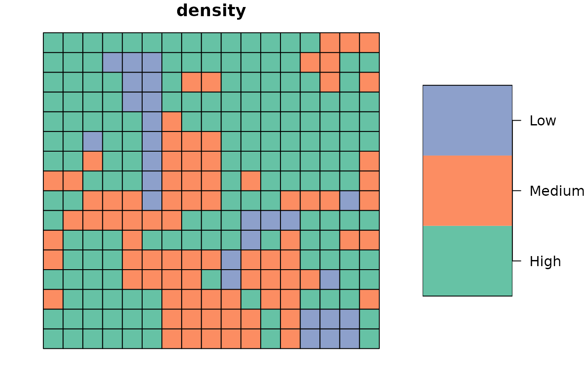
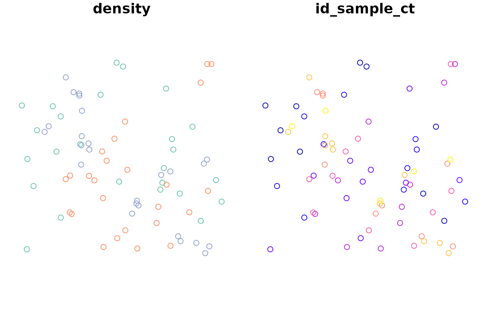
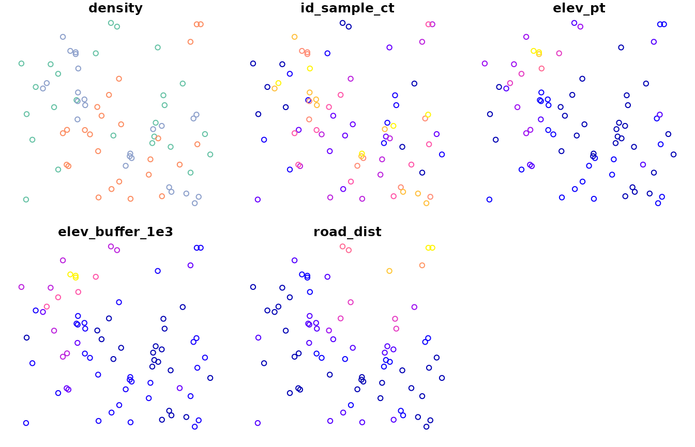
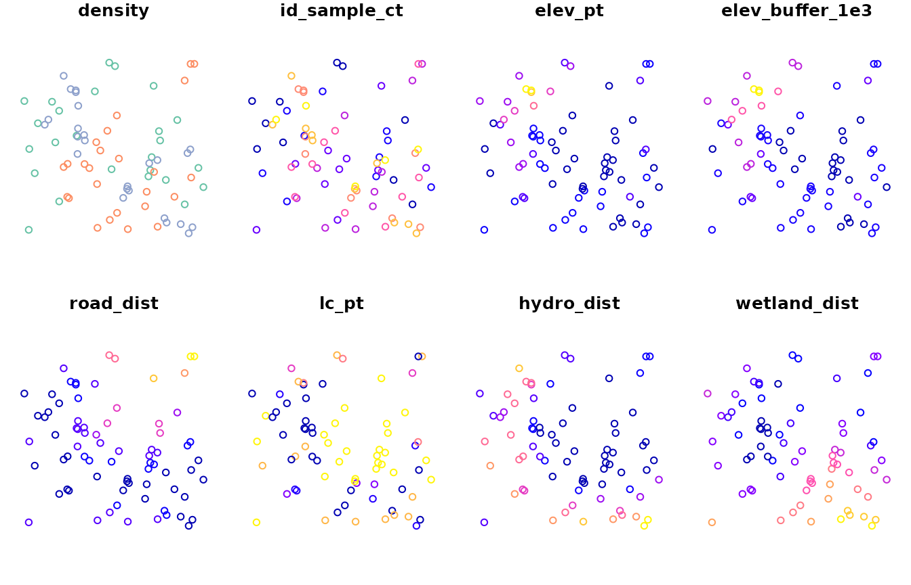
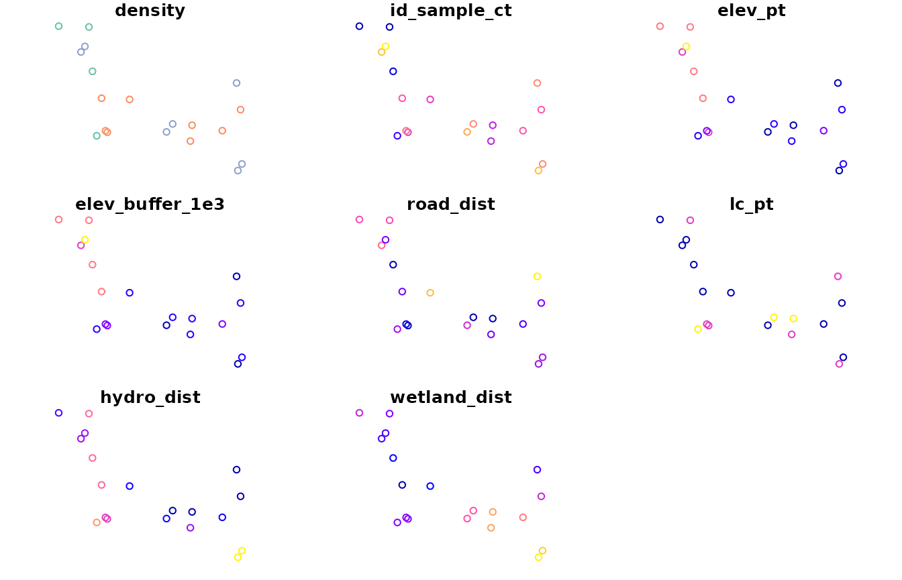
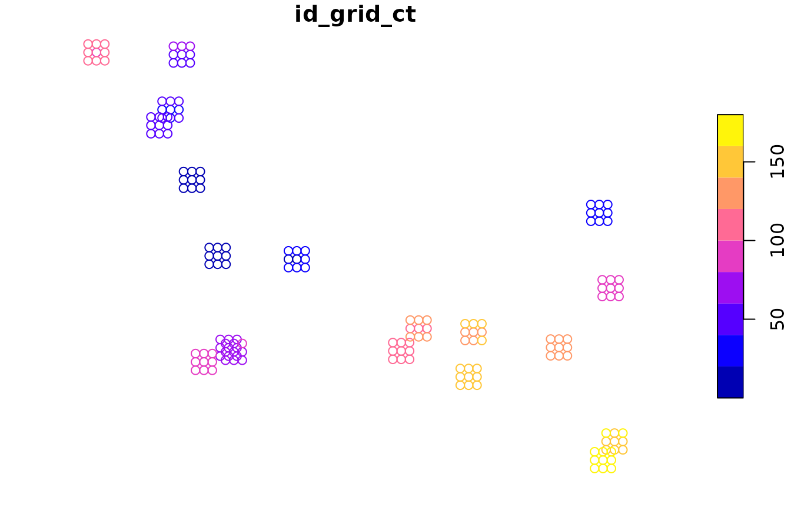

Introduction to camtrapmonitoring
Alec L. Robitaille
2023-07-27
Source:vignettes/intro-camtrapmonitoring.Rmd
intro-camtrapmonitoring.RmdThe {camtrapmonitoring} package provides functions for planning and evaluating camera trap surveys. The recommended approach is to first sample a set of candidate camera trap locations larger than the intended number of locations. Next, these candidate locations are evaluated using spatial layers to measure their deployment feasibility (such as distance to road) and to quantify their bias and coverage of project-specific characteristics (such as distribution across specific land cover classes).
{camtrapmonitoring} is designed to work with modern spatial R packages: {sf} and {terra}.
library(camtrapmonitoring)
library(sf)
#> Linking to GEOS 3.10.2, GDAL 3.4.1, PROJ 8.2.1; sf_use_s2() is TRUE
library(terra)
#> terra 1.7.39Sampling candidate camera trap locations
The sample_ct function returns candidate camera trap
locations using sf::st_sample across the user’s region of
interest. Options include “regular”, “random” or “hexagonal” sampling
across the entire region of interest or stratified by a column in the
provided features.
The example data “clearwater_lake_density” is a simulated species density grid near Clearwater Lake, Manitoba. It is a simple feature collection of polygons with a column named “density” (High, Medium, Low).
We will randomly sample candidate camera trap locations, stratified by the simulated species density.

pts <- sample_ct(
region = clearwater_lake_density,
n = 25,
type = 'random',
strata = 'density'
)
plot(pts)
Evaluating candidate camera trap locations
To evaluate candidate camera trap locations, determine each spatial layer required and the criteria associated with it. For example:
Deployment feasibility
- elevation
- point sample
- buffered point sample
- roads
- distance to
Characteristics of candidate locations
- land cover
- point sample
- hydrology
- distance to
- wetlands
- distance to
Deployment feasibility
First, we will evaluate the deployment feasibility layers. Note the example elevation data is an external TIF file that can be loaded with the {terra} package.
The eval_* family of functions return a vector of values
for each candidate camera trap location. These vectors can be added to
the simple features objects using the base R
df$name <- value syntax (shown here) or with
dplyr::mutate. eval_* functions take
‘features’ (candidate camera trap locations) and a ‘target’ covariate to
evaluate each candidate location with. For eval_pt and
eval_buffer, ‘target’ covariates are expected to be raster
layers while eval_dist expects a ‘target’ vector
object.
# Load data
clearwater_lake_elevation_path <- system.file('extdata', 'clearwater_lake_elevation.tif', package = 'camtrapmonitoring')
clearwater_lake_elevation <- rast(clearwater_lake_elevation_path)
data("clearwater_lake_roads")
# Evaluate elevation using point sample
pts$elev_pt <- eval_pt(features = pts, target = clearwater_lake_elevation)
# Evaluate elevation using buffered point sample
pts$elev_buffer_1e3 <- eval_buffer(
features = pts,
target = clearwater_lake_elevation,
buffer_size = 1e3
)
# Evaluate distance to roads
pts$road_dist <- eval_dist(features = pts, target = clearwater_lake_roads)
# Plot results
plot(pts)
Characteristics of candidate locations
Next, we will evaluate the characteristics of candidate locations. Note the example land cover data is an external TIF file that can be loaded with the {terra} package.
# Load data
clearwater_lake_land_cover_path <- system.file('extdata', 'clearwater_lake_land_cover.tif', package = 'camtrapmonitoring')
clearwater_lake_land_cover <- rast(clearwater_lake_land_cover_path)
data("clearwater_lake_hydro")
data("clearwater_lake_wetlands")
# Evaluate land cover using point sample
pts$lc_pt <- eval_pt(features = pts, target = clearwater_lake_land_cover)
# Evaluate distance to hydrology
pts$hydro_dist <- eval_dist(features = pts, target = clearwater_lake_hydro)
# Evaluate distance to wetland
pts$wetland_dist <- eval_dist(features = pts, target = clearwater_lake_wetlands)
# Plot results
plot(pts)
Selection from candidate camera trap locations
To select camera trap locations, define the criteria for selecting and sorting candidate locations.
Criteria for selection:
- Maximum distance from roads: 3000 m
- Maximum elevation: 300 m
- Select only forest land cover classes: 1, 2, 5, 6
Criteria for sorting:
- Nearer to wetlands
- Farther from major lakes
# Selection criteria
max_road_dist_m <- 3000
max_elev_m <- 300
ls_lc_classes <- c(1, 2, 5, 6)
# Select out of candidate points
select_pts <- pts[pts$road_dist < max_road_dist_m &
pts$elev_pt < max_elev_m &
pts$lc_pt %in% ls_lc_classes,]
plot(select_pts)
# Sorting criteria
ordered <- order(select_pts$wetland_dist, -select_pts$hydro_dist)
order_select_pts <- select_pts[ordered,]
print(order_select_pts)
#> Simple feature collection with 12 features and 8 fields
#> Geometry type: POINT
#> Dimension: XY
#> Bounding box: xmin: 346837.9 ymin: 5977444 xmax: 376807.1 ymax: 6001289
#> Projected CRS: WGS 84 / UTM zone 14N
#> First 10 features:
#> density geometry id_sample_ct elev_pt elev_buffer_1e3
#> 35 Medium POINT (376807.1 5990368) 35 260 260.7173
#> 72 Low POINT (349329.3 5995276) 72 288 288.3093
#> 69 Low POINT (347666.5 5996120) 69 292 283.2827
#> 11 High POINT (351414.3 6001289) 11 297 303.1196
#> 39 Medium POINT (351993.1 5982614) 39 274 272.5348
#> 2 High POINT (346837.9 5998188) 2 275 276.0684
#> 17 High POINT (375245 5984924) 17 270 267.7367
#> 48 Medium POINT (357655.2 5980482) 48 268 267.9049
#> 74 Low POINT (372677.8 5982957) 74 272 268.7977
#> 22 High POINT (351876.1 5977444) 22 291 290.3736
#> road_dist lc_pt hydro_dist wetland_dist
#> 35 126.5757 1 207.7812 3062.973
#> 72 2288.1865 1 4907.0943 3087.799
#> 69 844.2008 1 3092.9211 4930.134
#> 11 2032.9371 1 6248.3180 5547.652
#> 39 399.1855 1 4311.9726 6026.147
#> 2 1218.0364 6 2682.0503 6624.579
#> 17 171.8740 5 1126.9013 8592.667
#> 48 1874.8160 1 2419.8335 9046.035
#> 74 1070.3851 1 1977.7505 11131.500
#> 22 1254.2629 1 7134.5292 11151.315Establishing camera trap grids
The function grid_ct allows the user to establish
sampling grids around focal locations selected above. The
grid_design function is provided to the user to help
explore grid layout options, using either the ‘case’ argument or the ‘n’
argument.
plot(grid_design(distance = 100, case = 'queen'))
plot(grid_design(distance = 250, n = 13))After the grid design is selected, the grid_ct function
can be used with the selected camera trap locations.
ct_grids <- grid_ct(
features = order_select_pts,
distance = 500,
case = 'queen'
)
plot(ct_grids['id_grid_ct'][1])